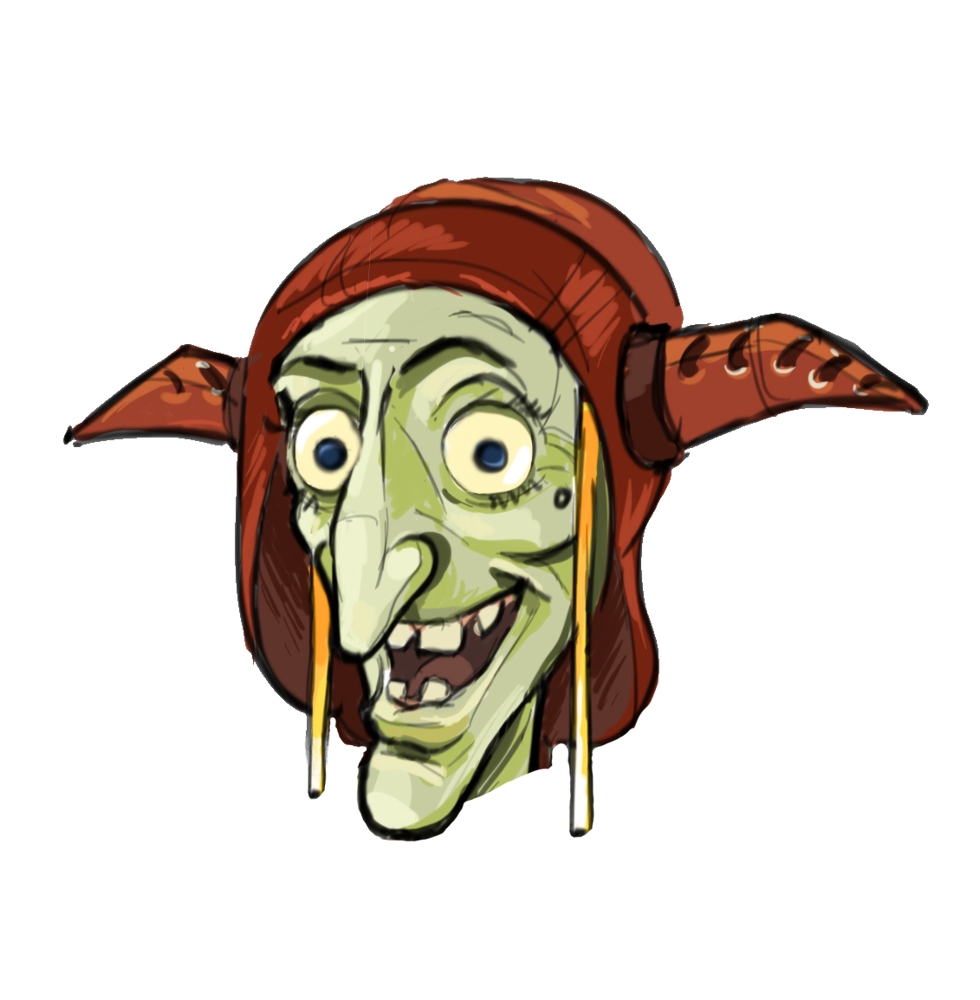

Spielbeschreibung
Wähle zunächst eine Tonfolge (beginne am besten mit 5 Tönen bei Chromatik oder Tonal). Es erklingt eine Tonfolge.
Du kannst die Tonfolge jederzeit wieder hören. Die klingenden Töne leuchten dabei kurz auf, doch das gibt einen Punktabzug. Solange der Kobold noch nicht gespielt hat, kannst du auf der Tastatur auch die Töne nachspielen.
Dann lass den Kobold spielen. Dieser lässt einen Ton aus oder spielt stattdessen einen anderen Ton. Klicke auf der Tastatur den fehlenden Ton und gewinne die Runde oder starte eine neue Runde.

Tempo x Tonfolge = Gewinn
Gesamt-Score: 0
möglicher Gewinn: 0